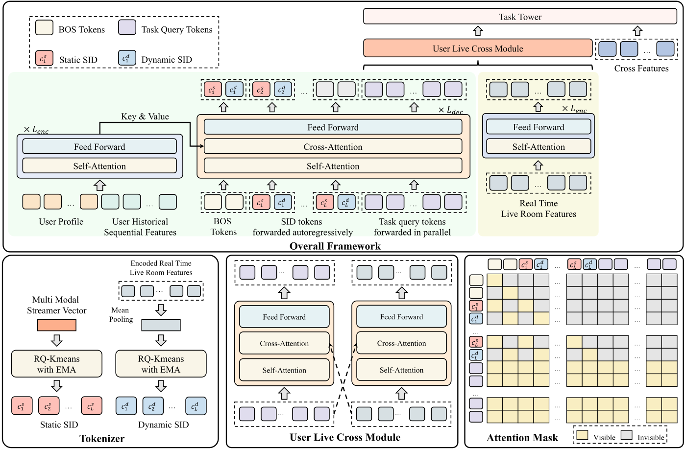
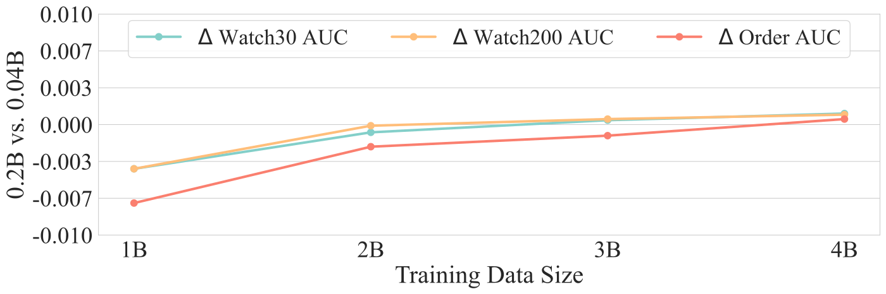

目录 · 9 节
1它到底在解决什么问题？2先看全景3两套 SID 怎么来4解码器：交替生成两套 SID，再用任务 query 抽表示5离线实验：比线上基线高，但幅度小且不均匀6线上结果和成本7我认为它的局限8一个推荐团队可以怎么试9一句话结论和评价分享 SHARE
做直播、电商或其他内容实时变化场景的推荐团队值得读。它没有走“用生成式模型直接吐出推荐结果”这条路，而是把生成式的编码器–解码器放在粗排模型的用户侧，只用来生成 Semantic ID 并顺带抽取用户表示，最后的打分仍交给带交叉特征的判别式网络。核心思想一句话：每个直播间有两套 SID，一套来自主播近几天的历史内容、基本不变，另一套由直播间此刻的实时特征量化得到、随内容变化；解码器交替生成这两套 SID，再用每个任务专属的几个可学习 query 抽出表示，和用户–主播的点赞、下单等交叉特征一起做多任务预测。线上 A/B 观看时长涨 3.38%、GMV（成交总额）涨 0.72%，模型算力从 0.9T 涨到 15T FLOPs，延迟只多 1.33%。我认为“静态 + 动态两套 SID”这个拆法值得借鉴，但离线提升小且不均匀，动态 SID 的证据也只有一个直播间的案例。
它到底在解决什么问题？
先看一个示意场景。一个服装主播晚上 8 点开播，前半小时在聊天预热，观看的人不多；9 点开始上新款外套，观看人数涨了几倍。对推荐系统来说，同一个直播间在这两个时刻完全是两样东西。
近两年推荐里流行用 Semantic ID（SID）表示物品：把物品的多模态内容编码成向量，再逐层量化成几个离散码，内容相近的物品共享前缀。短视频的 SID 是静态的，一条视频发出去内容就不变了。直播不一样，作者指出两点：
| 难点 | 具体表现 |
|---|---|
| 内容实时变化 | 同一个直播间，讲什么、卖什么、热度如何，随时都在变；静态 SID 只能描述主播一贯的风格 |
| 用户–主播交互很重要 | 用户是否给这个主播点过赞、下过单，是判断他会不会进直播间、会不会买的强信号；纯生成式方法通常没有地方放这类交叉特征 |
另一个背景是算力。作者说他们线上的粗排模型（DLRM，基于 attention 和 MLP 的传统结构）已经很强，再改结构收益很小，而且算力利用率很低。生成式结构的好处是加参数就能涨效果，问题是怎么在不丢掉交叉特征的前提下用上它。
这里说的粗排，是召回和精排之间的一层：先用双塔分别编码用户和候选，再接一个轻量的交互网络打分。用户塔每个请求只算一次，候选侧的计算要对每个候选做一遍，所以重计算要尽量放在用户侧。
先看全景

整条链路可以分成四步：
| 步骤 | 输入 | 输出 |
|---|---|---|
| 1. 生成两套 SID | 主播近 M 天的历史片段；直播间此刻的实时特征 | 静态 SID、动态 SID，各 3 层，每层 2048 个码 |
| 2. 用户侧编码–解码 | 用户画像、历史序列 | 交替生成两套 SID，同时让任务 query 抽出用户表示 |
| 3. 用户–直播间交叉 | 用户表示、直播间实时表示 | 两边互相做交叉注意力后的表示 |
| 4. 多任务预测 | 上一步的表示 + 用户–主播交叉特征 | 观看超过 30 秒、超过 200 秒、下单等任务的分数 |
两套 SID 怎么来
静态 SID 描述主播一贯的样子。作者取主播最近 M 天的直播片段，每天采样若干段，用微调过的多模态模型把每段编码成向量（这些向量训练时冻结），再用一个 Transformer 编码器汇总、取平均，得到主播向量。纯内容向量缺协同信号，所以又用 Swing（阿里常用的物品相似度算法，看两个物品是否被同一批用户共同点击）挖出相似主播对，做对比学习，把相似主播的向量拉近。最后用 RQ-KMeans（逐层做 k-means 的残差量化：第一层聚类，第二层对第一层的残差再聚类，以此类推）量化成 3 个码。
动态 SID 描述直播间此刻的样子。输入是实时特征，比如当前观看人数、当前片段的内容。这些特征先经 MLP 投影、Transformer 编码，平均后得到实时向量，再同样量化成 3 个码。这个编码器用一个已经训练好的直播推荐模型的参数初始化，收敛更快。
实时向量一直在变，码本固定不动就跟不上，所以码本用 EMA（指数滑动平均）更新：每个码向量记着“分到它名下的向量总数”和“这些向量之和”，每来一个 batch，两者都按 0.99 的旧值加 0.01 的新值更新，码向量取两者之比。用一维数字手算一个示意：某个码当前计数 100、总和 100，码值是 1.0；一个 batch 里有 10 个向量分到它，平均值是 2.0、总和是 20。更新后计数是 0.99×100+0.01×10=99.1，总和是 0.99×100+0.01×20=99.2，码值变成约 1.001。这说明码本只会慢慢挪动，单个 batch 拉不动它，换来的是稳定。
动态 SID 是否真的跟着直播间变？论文给了一个主播一天里 3 个时刻的例子：静态 SID 始终是 (1512, 646, 631)，动态 SID 的前两层依次是 (111, 1559)、(111, 1551)、(111, 1194)，对应的 5 分钟观看数从不到 100 涨到 700 多。这说明热度变了，动态 SID 的第二层跟着变，第一层保持不变，而静态 SID 对这些变化毫无反应。
解码器：交替生成两套 SID，再用任务 query 抽表示
用户侧是一个标准的编码器–解码器。编码器读入用户画像和历史序列。解码器的输入依次是：静态、动态两个起始 token；交替排列的两套 SID，即第 1 层静态码、第 1 层动态码、第 2 层静态码、第 2 层动态码……；最后是每个任务各 2 个可学习的 query token。
为什么要交替排列？如果先生成完静态 SID 再生成动态 SID，自回归要走 6 步；交替排列后每一步同时出同一层的静态码和动态码，3 步就够了，生成时间减半。为了不让两套 SID 互相干扰，注意力掩码规定：静态码只能看前面的静态码，动态码只能看前面的动态码；任务 query 能看所有 SID token，彼此之间也能互相看到，并且在一次前向里一起算出来。
训练样本是一条条“用户–直播间”交互记录。SID 部分的监督信号，论文写的是对静态、动态 SID 各层的下一个 token 预测交叉熵；按我的理解，预测目标就是这条记录里那个直播间的两套 SID，也就是让模型从用户历史学会“这个人接下来会进什么样的直播间”。训练时用 teacher forcing（每一步都喂真实的上一个码，而不是模型自己生成的）。推理时没有真实的 SID，要靠 beam search 生成。SSRLive 对静态和动态各维护一组 beam，大小都是 10。第 b 个静态候选和第 b 个动态候选配成一对，各自的序列概率在组内归一化，取两者的平均作为这一对的权重，再把 10 对候选对应的用户表示加权求和。手算一个示意：只看 2 对候选，静态概率归一化后是 0.7 和 0.3，动态是 0.6 和 0.4，那么两对的权重是 (0.7+0.6)÷2=0.65 和 (0.3+0.4)÷2=0.35。这样做的好处是不用押注单一的 SID 结果，生成得不确定时，表示会自然地混合几种可能。
任务 query 是这里真正连接生成和判别的部件。解码器最后几个位置的输出，就是每个任务的 2 个 query 从 SID 和用户特征里抽出的表示。直播间实时特征那一路也被投影成同样“任务数 × 2”个向量。两边先各自做自注意力，再互相做交叉注意力，最后按任务切片，和用户–主播交叉特征拼起来，进各任务的 MLP。线上把几个任务的分数按权重相乘，得到粗排的最终分。
离线实验：比线上基线高，但幅度小且不均匀
离线数据是淘宝直播一周、约 10 亿条用户–主播交互。评估任务有三个：观看超过 30 秒（Watch30）、超过 200 秒（Watch200）、是否下单（Order）。指标是 AUC 和 GAUC（按用户分组算 AUC 再加权平均，更接近“给同一个人排得准不准”）。对比方法里，DLRM 是淘宝直播线上的粗排模型；SASRec、ReaRec、HSTU 原本是召回用的序列模型，作者把它们的主干拿来编码用户和直播间，再接同样的交叉特征和 MLP，改造成粗排模型。
| 模型 | Watch30 AUC | Watch30 GAUC | Watch200 AUC | Watch200 GAUC | Order AUC | Order GAUC |
|---|---|---|---|---|---|---|
| DLRM（线上基线） | 0.7610 | 0.6892 | 0.8229 | 0.7288 | 0.8312 | 0.6727 |
| SASRec | 0.7581 | 0.6781 | 0.8154 | 0.7105 | 0.8205 | 0.6689 |
| HSTU | 0.7613 | 0.6823 | 0.8192 | 0.7156 | 0.8249 | 0.6710 |
| SSRLive | 0.7692 | 0.6956 | 0.8255 | 0.7281 | 0.8358 | 0.6946 |
这张表说明两件事。第一，线上基线很强：改造来的 HSTU 等模型几乎全面不如 DLRM，说明把通用序列模型搬过来并不能直接涨点。第二，SSRLive 的提升集中在 Watch30 和 Order 的 GAUC 上，Order GAUC 涨了 0.022；但 Watch200 的 AUC 只涨 0.0026，GAUC 甚至比 DLRM 低 0.0007。
| 消融（去掉某部件） | Watch30 AUC | Watch200 AUC | Order AUC | Order GAUC |
|---|---|---|---|---|
| 完整 SSRLive | 0.7692 | 0.8255 | 0.8358 | 0.6946 |
| 去掉全部 SID | 0.7602 | 0.8179 | 0.8245 | 0.6773 |
| 只去掉动态 SID | 0.7637 | 0.8214 | 0.8280 | 0.6798 |
| 去掉任务 query | 0.7676 | 0.8246 | 0.8344 | 0.6960 |
| 去掉交叉特征 | 0.7593 | 0.8149 | 0.8269 | 0.6826 |
这说明 SID 和交叉特征是两根主要支柱：去掉任何一个，Watch30 AUC 都退回到 DLRM 的水平以下。只去掉动态 SID 时掉的幅度大约是去掉全部 SID 的一半到七成，意味着动态 SID 贡献了相当一部分收益。任务 query 的作用小得多，Order GAUC 去掉它反而略高。附录里把每个任务的 query 从 2 个加到 5 个，三个任务的 AUC 都再涨 0.002 到 0.003，说明这一部分还有余量。

上图是作者对“加参数能否涨效果”的回答。这说明大模型确实需要更多数据才能追上，但在 40 亿条数据时的领先只有约 0.001，而线上部署的是 0.04B 的小版本。所以这篇的收益主要来自 SID 和交叉特征的设计，规模化的红利还没有体现出来。
线上结果和成本
线上 A/B 对比的是 DLRM，所有指标都显著提升：
| 指标 | 提升 |
|---|---|
| 观看时长 | +3.38% |
| 观看次数 | +1.89% |
| GMV | +0.72% |
| 订单数 | +2.36% |
| 关注数 | +3.12% |
| 互动人数 | +2.92% |
这说明提升不只停留在离线 AUC 上：从观看、成交到关注互动，线上各类指标是一起涨的，其中观看时长和关注数涨得最多。
成本方面，SSRLive 的稠密参数是 0.04B，DLRM 是 3M；论文效率表用同一口径列出两者的稠密计算量：SSRLive 是 15T FLOPs，DLRM 是 0.9T。表里只给这一个总数，所以这里只看比值：同样的线上服务，算力用量涨了约 16 倍。延迟只多 4.41%，因为用户侧的生成模块每个请求只算一次，直播间编码器不依赖用户，放在外部服务里异步算，直播间状态变了才刷新，可以被成千上万个请求复用。再加上 Partial Run（在候选直播间数据还没准备好时就提前开始算用户侧），延迟增量降到 1.33%。把重计算放在每个请求只算一次的用户侧，是这套结构能在粗排上线的关键。
我认为它的局限
第一，离线提升小且不均匀。三个任务里 Watch200 的 GAUC 比线上基线还低 0.0007，AUC 也只涨 0.0026。离线数据只有一周，对比方法都是改造来的，没有公开数据集，别人很难复现。
第二，动态 SID 的直接证据很薄。除了消融里的数字，展示动态 SID 跟着直播间变的只有一个主播一天里的 3 个时刻。动态 SID 多久刷新一次、码本 EMA 用 0.99 这么慢的速度能否跟上直播间分钟级的变化，这些都是部署时要自己测的。
第三，规模化的说法要打折。大模型要到 40 亿条数据才领先约 0.001 AUC，而离线主实验的数据只有约 10 亿条，线上用的是小版本。算力涨 16 倍换来的线上收益，主要应归功于 SID 和交叉特征的设计。
一个推荐团队可以怎么试
- 先确认你的物品是否真的在“实时变化”：对直播间或其他动态物品，统计同一物品在一天内不同时刻的特征（热度、内容）差异有多大。变化不大，就只做静态 SID。
- 先在现有粗排模型里把静态 SID 当作额外特征加进去，看离线 AUC 和 GAUC。
- 再加动态 SID：用现有模型的物品塔输出作为实时向量，做 RQ-KMeans 量化，码本用 EMA 更新；同时记录同一物品的动态 SID 一天变几次。
- 最后才考虑把用户侧换成编码器–解码器加任务 query，并同步做好用户侧只算一次、物品侧异步缓存这两项工程优化，否则延迟会吃掉收益。
一句话结论和评价
这篇最值得带走的是：内容会变的物品可以同时用一套稳定的静态 SID 和一套随实时特征变化的动态 SID 来表示，生成式结构只负责产出这两套 SID 和用户表示，打分仍交给带交叉特征的判别式网络。
| 维度 | 评价 |
|---|---|
| 问题重要性 | 高。直播、电商大促等实时变化的场景很常见，静态 ID 跟不上 |
| 方法创新性 | 中。动态 SID 和交替生成是新点，其余是已有部件的组合 |
| 实验证据 | 中低。线上 A/B 扎实；离线提升小且有一项低于基线，动态 SID 只有单个案例 |
| 工程成本 | 高。需要两套 SID、异步的直播间编码服务和提前计算的工程改造 |
| 是否值得尝试 | 值得，先从把静态和动态 SID 当特征加进现有模型开始 |
| 适用场景 | 直播、实时内容流等物品状态随时间明显变化的粗排或精排 |
读完这篇，你觉得
夜读鸮记下了，谢谢你的反馈。
点一下即可，无需登录；再点一次撤回。只统计匿名次数，不记录你是谁。
讨论
欢迎补充实验细节、复现经验或不同看法。需 GitHub 登录。
正在加载讨论…